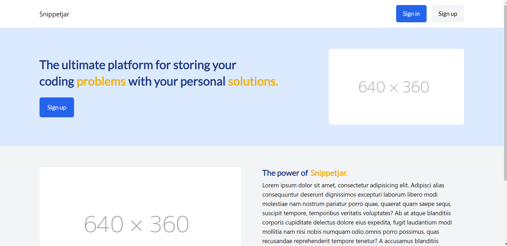

Hoe en wat?
Dit is Snippetjar. Dit is een applicatie waarbij je oplossingen kunt opslaan voor problemen die je tegen komt met het programmeren, zodat je die later weer snel kan ophalen. Ik heb hier de CSC rol opgepakt en een stukje react logica.
Dit is Snippetjar. Dit is een applicatie waarbij je oplossingen kunt opslaan voor problemen die je tegen komt met het programmeren, zodat je die later weer snel kan ophalen. Ik heb hier de CSC rol opgepakt en een stukje react logica.